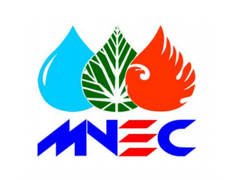

The Mongolian Nature & Environment Consortium (MNEC) is a non-profit, non-governmental alliance of 14 nature and environment conservation research institutes, centers and non-governmental organizations. The MNEC conducts studies, scientific research, and practical activities to increase awareness and understanding of Mongolia’s environment and natural resources and encourage their sustainable use. MNEC’s projects offer a bridge between the coal mine methane (CMM) and coalbed methane (CBM) sectors and the Mongolian public, including specific efforts to reduce methane emissions.
MNEC helped to develop a study of CMM fugitive emissions to create an inventory to be used for emission reductions calculations and targets. The study found that higher emission factors are associated with wetter environments, where rainfall increases the amount of hydrostatic pressure and prevents CMM from escaping to the atmosphere.
MNEC worked to build capacity for CMM exploration and project development within Mongolia. Specific activities included:
MNEC was involved in the publication of several outreach materials to increase public awareness of CMM, including Methane Recovery and Utilization Opportunities in Mongolia and scholarly articles related to methane recovery and utilization.